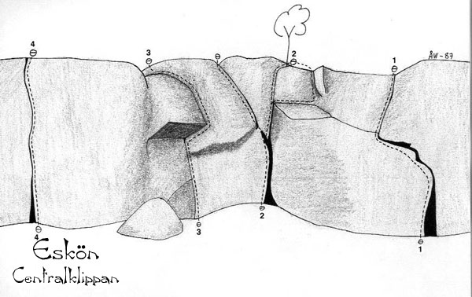

Eskön
Allmänt
Eskön ligger 2,5 mil norr om Gävle.
Kommunikationer
Med bil från Gävle kör man 15 km norrut på Trödjevägen (gamla E4:an) och svänger höger vid en skylt "ESKÖN 7". Efter 7 km svänger man höger vid en lanthandel och fortsätter nu på en grusväg ca 3 km, då man ser centralklippan från vägen.
Väldigt, väldigt ungefärliga GPS-koordinater: Lat: N 60º 47' 34.45" Long: E 17º 20' 29.39"
Historik
Klippan

Centralklippan är som högst 10 meter med brant och fin spricklättring. Mindre väggar och boulders finns det gott om runt centralklippan. Väldigt få turer har gjorts.
- 1
- Seven Up
- 6
- Fritt: Lars Eriksson
- 2
- Direkttissiman
- 4
- Kan varieras med två olika utsteg
- 3
- Spindeltaket
- 5+
- Fritt: Kent Andersson och Lars Eriksson
Boulderproblem
Dessa sektorer med boulderproblem kommer från föraren Bimbo.
A
Sektor A är området längst till vänster sett från parkeringen. Gå över fältet för att nå sektorn. Sektor A innefattar Taggtrådsblocket, Hårdareblocket samt Foo Fightersblocket. Även väggarna mellan de olika blocken hör till Sektorn.
{|
|- valign="top"
| width="250px" |
- 1
- Taggtråden
- 5B
- Passa taggtråden på marken som gett problemet dess namn. Ligger längst till vänster på Taggtrådsblocket. I sektor A.
- 2
- Taggtråden sittstart
- 5C
- Sittstart till Taggtråden, höjer graden nått steg.
- 3
- Dog Fight
- 6A
- Går på aréten till höger om taggtråden på "Taggtrådsblocket". I sektor A
- 4
- Goa crimpar
- 6A
- Börjar nere till vänster på taggtrådsblocket precis bredvid Dog Fight. Starta på de två tydliga greppen. Gå sedan rakt upp över kanten.
- 5
- Passa Pinchen
- 5C
- Går mitt på taggtrådsväggen. Blocket längst till vänster vid kalhygget. I sektor A.
- 6
- Smutsiga tassar
- 5A
- Går till höger om "Passa Pinchen" på Taggtrådsblocket i sektor A.
- 7
- Mc Stefan & Co.
- 5C
- Ligger till vänster om "Till vänster om stölden" ut mot kalhygget. Delen till vänster om sprickan på blocket är inte med.
- 8
- Den till vänster om stölden
- -
- Går rakt upp i sprickan till vänster om "Stölden". Ligger på sidan ut mot kalhygget mellan "Taggtrådsväggen" och "Hårdareväggen"
- 9
- Stölden
- 5C
- Sprickan till vänster är inte med
- 10
- Skarpingen
- 5A
- Går till vänster om U.C.S på hårdare blocket ut mot kalhygget.
- 11
- U.C.S
- 6C
- Ligger till vänster på "hårdareblocket" ut mot kalhygget. Startar etablerat på två undercling mitt på väggen. Stora stenen till vänster är inte med (den spruckna delen som lossnat). Gå rakt upp utan att använda högra "aréten".
- 12
- Softisch
- -
- Går i den tydliga sprickan på hårdareblocket. Sittstart följer sprickan rakt upp.
- 13
- Halvhård
- 6B
- Går lite till vänster om mitten på hårdare blocket. Sittstart på tvåfingers för höger och sprickan för vänster, gå upp och matcha i sprickan sedan rakt upp utan att gå mot aréten.
- 14
- Enklast
- 7A
- Starta i samma spricka som halvhård på hårdareblocket gå upp åt höger via litet sidepull/pinch och sen upp över kanten.
- 15
- Hårdare
- 6B+
- Går till höger på hårdare blocket. Startar på två crimpar, vidare till undercling och upp över kanten.
- 16
- Hårdast
- 6B
- Samma start som hårdare, går sedan ut till höger och upp längs aréten.
- 17
- Everlong
- 6A+
- Ligger på "Foo Fighters blocket" 10 meter in i skogen från "Hårdare väggen". Går på den tydliga överhängande aréten.
- 18
- Incubus
- 6B
- Ligger på "Foo Fighters blocket", 10 meter in i skogen från "Hårdare väggen". Går precis till höger om "Everlong"
- 19
- Hård
- 6A
- Går mellan hårdare och hårdast på Hårdareblocket. Gå rakt upp mellan de två problem mot den stora hyllan uppe på "bullen".
B
Sektor B är området runt skogsklippan och innefattar Påskväggen, Lösablocket samt några mindre block i anslutning till dessa.
{|
|- valign="top"
| width="250px" |
- 1
- Johans aréte
- 4C
- När ni går förbi skogsklippan mot passa pungen och baksidan av skogsklippan går ni förbi de två små aréterna den första är Ronnys aréte den andra Johans aréte.
- 2
- Ronnys aréte
- 4C
- När ni går förbi skogsklippan mot passa pungen och baksidan av skogsklippan går ni förbi de två små aréterna den första är Ronnys aréte den andra Johans aréte.
- 3
- Oförsäkrad
- 4C
- Följer aréten på fina grepp till toppen. Går längst till vänster på lösablocket.
- 4
- Egenförsäkrad
- 5A
- Går till vänster på lösa blocket, precis till höger om Oförsäkrad. Svagt överhängande på stora grepp.
- 5
- Junior och de gamla grenarna
- 5C
- Lite lös i klippan, sätt inte höger fot för långt ut vid utsteget. Kan vara löst där.
- 6
- Vårkänsla
- 4C
- Går på högra aréten på Lösablocket.
- 7
- Nicko var är strumpan
- 5B
- Väggen ligger runt hörnet där Höjdskräck går på påskväggen.Klippdelen till höger om sprickan är inte med
- 8
- Den vilda jakten på Juniors strumpa
- 5C
- Går till vänster om Nicko var är strumpan. Väggen ligger runt hörnet där Höjdskräck går på påskväggen.
- 9
- Höjdskräck
- 5B
- Går på aréten längst till vänster på Påskväggen. Följer aréten upp.
- 10
- Ronnys travers
- 5C
- Startar i sprickan längst till vänster vid aréten på påskväggen. Följer sedan sprickan till höger och upp.
- 11
- Not so easy
- 6A
- Går till vänster om den stora vertikala sprickan på påskväggen (sprickan Ronnys travers går upp i). Kruxet är på slutet
- 12
- 2 f***ing easy
- 5B
- Går längst till höger på den höga delen av Påskväggen. Dyno från de stora listerna till listen 1 dm under toppen eller gå via side pull till höger till samma list.
- 13
- Påskafton
- 5A
- Går till vänster om Långfredag på påskväggen.
- 14
- Långfredag
- 5A
- Går till vänster om Skärtorsdag på Påskväggen.
- 15
- Skärtorsdag
- 5A
- Går längst till höger på Påskväggen
- 16
- Carolas Travers
- 5B
- Starta längst till vänster på Påskväggen, samma start som Ronnys travers, traversera hela väggen till höger och toppa ut så långt till höger det går utan att använda aréten.
- 17
- Rakt upp
- 5C
- Går till höger om sprickan som avslutar Ronnys travers. Sprickan till vänster är utesluten.
- 18
- Loose rock
- 6B
- Variant på "Först fanns det grepp sen kom Dan".Går strax till höger om "Junior och de gamla grenarna" mitt på lösare blocket. Start med en undercling och crimp skicka till toppen.
C
Sektor C ligger upp till höger sett från parkeringen. Gå mot "ängen" följ kraftledningen åt höger så kommer ni till blocken. Sektorn innefattar kraftledningsblocken, speleologiblocket samt snusblocken
{|
|- valign="top"
| width="250px" |
- 1
- Svanka
- 6B
- Samma start som vattenskräck men går längs stenen åt vänster förbi aréten och upp efter denna.
- 2
- Vattenskräck
- -
- Går på det första stora blocket i samlingen av kraftledningsblocken. Samma start som Svanka men mantla sedan rakt upp via bollen.
- 3
- Ronnys kana
- 5C
- Går på baksidan av stenen där svankit går
- 4
- Tjocksälen
- 6A
- Går vid kraftledningsblocken. Om du står framför Ronnys kana så går problemet på aréten på stenen till vänster. Lågt problem som startar sittande.
- 5
- Klackarna i taket
- 6A+
- Går på samma block som Tjocksälen. Starta på baksidan sett från Tjocksälen. Foten på den stora utbuktningen, traversera sedan åt höger runt blocket och avsluta med att göra Tjocksälen.
- 6
- Våga vägra sittstart
- 6A
- Går på samma sida som Lägre än låg vid kraftledningsblocken på blocket längst till vänster. Höger hand på slope/sidepull och vänster på Underkling/sidepull (låg). Vänstra stenen ej med.
- 7
- Borde ha sittstart
- 6C
- Går på samma sida som Lägre än låg vid kraftledningsblocken på blocket längst till vänster. Som Våga vägra sittstart men utan aréten. Etablera starten på crimp/sidepull under överhänget.
- 8
- Lägre än låg
- 5B
- Går vid kraftledningsblocken på andra sidan kraftledningen sett från Slippery when wet, till höger om "sittstarts" problemen. Starta lågt på juggen. Följ sprickan upp över kanten. Mantlingskrux.
- 9
- Knubbsälen
- 6A+
- Ligger vid Kraftledningsblocken. Gå förbi Våga vägra sittstart mot Speleologiblocken så är den precis innan blocket tar slut. Starta på jugen, mantla sedan över kanten. Stora klippdelen till höger är ej med för foten.
- 10
- Järnkorset
- 6B+
- Går till vänster om knubbsälen vid kraftledningsblocken. Starta ute till vänster på juggarna, traversera längs taket ut till knubbsälen och avsluta genom att göra knubbsälen.
- 11
- Trust your feet
- 5C
- Går på det största av kraftledningsblocken, på sidan ut mot kraftledningen. Start på två crimpers och stora steget. Går sedan aningen åt höger över kanten.
- 12
- Slippery when wet
- 5C
- Går på det störstablocket av kraftledningsblocken på aréten ut mot kraftledningen. Sittstart på stora jugen.
- 13
- Left hand crimp
- 6C+
- Går på det största blocket av kraftledningsblocken till höger om Slippery when wet. Start på vassa crimpen sedan rakt upp till vänster. Gå ej höger över mossan in på Nybörjaren.
- 14
- Nybörjaren
- 5A
- Går på det största blocket av kraftledningsblocken till höger om Left hand crimp. Går rakt upp till höger om mossan.
- 15
- Tjej pisk (Pilla mig på pungen)
- 6A+
- Gå förbi kraftledningsblocken ned mot vägen, ligger till vänster innan vägen. Startar nere i grottan med händerna på den tydliga listen. Det framborstade fotsteget på stenen till vänster är med vid starten.
- 16
- Hårdrock
- 6B+
- Startar på stora sidepullet under stenen. Går sedan ut på list och aréte och rakt upp. Endast undersidan av högra stenen är med.Ligger längst till höger på speleologiblocket
- 17
- Speleologi for beginners
- 6B+
- Startar liggande in under klippan med händerna i de tydliga hålen i sprickan. Kruxet är att ta sig ut och upp utan att ta i backen. Går till vänster om Hårdrock på speleologiblocket.
- 18
- Highball for beginners
- 6A
- Går till vänster om speleologi for beginners på speleologiblocket.
- 19
- Fin skit
- 5B
- Går runt speleologiblocket till vänster, startar på den tydliga listen. Vänstra blocket är ej med för fötterna.
- 21
- Ragnar
- 6A+
- Grym linje, lättare än den ser ut...
- 22
- Tre Ankare
- 6A+
- Det borstade fotsteget på stenen till vänster ingår.
- 23
- Vargtass
- 6B+
- Samma sten som ragnar. starta under taket.
- 24
- Den är inte lång men sned!
- 5C
- Går på baksidan av det stora blocket innan centralklippan på en liten aréte
- 25
- Katla
- 7C
- Förlängning på syster dyster (syster dyster är samma problem som "Tjejpisk" fast utan fot på stenen bredvid). Ligger vid kraftledningsblocken. starta i grottan på listerna tillhöger. akta stenen.
- 26
- Puttes travers
- 7A
- Går till höger om Katla på läppen, starta till höger på den låga kanten på överhänget. Traversera längs kanten och mantla upp.
D
Sektor D är området bakom skogsklippan, innefattar även vattenblocken.
{|
|- valign="top"
| width="250px" |
- 1
- D.U.C.K.H.A
- 4C
- Ligger vid skogsklippan.
- 2
- Gävle grodan
- 5B
- Ligger vid skogsklippan
- 3
- Dubbeldyno^2
- 4C
- Ligger vid skogsklippan, dubbeldyno mellan sprickorna och sen dubbeldyno till toppen.
- 4
- Passa pungen
- 5A
- Ligger vid skogsklippan.
- 6
- Tokfin
- 5C
- Ligger vid skogsklippan. Följer den högra aréten.
- 7
- Vill du få pisk med björken?
- 6B+
- Ligger vid skogsklippan. Följer den vänstra aréten och toppar ut på samma ställe som "Tokfin"
- 8
- Dinosaurie fot
- 5C
- Ligger vid skogsklippan. Startar på två krimpar mitt på väggen.
- 9
- Reinkarnation
- 5A
- Ligger vid skogsklippan. Börjar inne i en grotta. Du toppar ut genom ett hål!
- 10
- ?
- 6A
- Ligger vid skogsklippan, startar under ett litet överhäng. I princip samma problem som dreamcatcher. Men det är valfria händer och fötter i starten.
- 11
- Spruta mig full
- 7A
- Samma sittstart som "Vill du bli piska med björken deluxe", traversera sedan åt höger och gör "tokfin" som avslutning.
- 12
- Gammelgäddan
- 5C
- Ligger vid vattenstenarna.
- 12
- Grävlings traversen
- 7A
- Starta längst in i grottan där reinkarnation går, traversera ut mot utgången och gör reinkarnation rakt upp, väggen bakom ryggen är inte med.
- 13
- Krakow
- 5C
- Ligger vid vattenstenarna som finns ca 50 meter nordväst om Centralklippan.
- 14
- Grävlings jakt
- 5C
- Ligger vid skogsklippan, man får hoppa ner i ett hål för att komma till insteget.
- 15
- Min högra häl
- 6B+
- Starta med vänster hand på en bra crimp ovanför kant
- 17
- Vill du få pisk med björken deluxe
- 6C+
- Samma som Vill du få pisk med björken fast med sittstart.
- 18
- mer sticky än fontan
- 6C+
- Går på vattenblocken. Start precis till vänster om den högra areten därefter snett uppåt till vänster och den juggiga rampen. området ligger uppe på kullen ovanför dreamcatcher, stå med ryggen mot dreamcatcher och går rakt upp.
- 19
- spirited away
- 7A+
- Ståstart, går på vertikala höga väggen vid vattenblocken, på vänstra sidan.osäkergrad den kan vara lättare
- 20
- Drömfursten
- 7C+
- Till höger om dreamcatcher, samma sten
- 21
- Splash
- 7B
- Taket bredvid vattenblocket (spirited away). låg sittstart på stockarna i vattnet. starta med vänster hand i sprickan längst ner.
- 22
- Lill fot
- 5A
- Ståstart till vänster om Dinosaurie fot
E
Sektor E är Centralklippan och området runt den.
{|
|- valign="top"
| width="250px" |
- 1
- Stalingrad
- 5C
- Ligger vid Centralklippan
- 2
- Leningrad
- 5B
- Ligger vid Centralklippan
- 3
- Trippin´
- 4A
- Går på en "pelare" till vänster om leden "Escape".
- 4
- Godsmack
- 6A
- Går vid centralklippan.
- 5
- Greed
- 6B
- Ligger vid Centralklippan
- 6
- Bad Magick
- 5C
- Ligger vid Centralklippan
- 7
- Time Bomb
- 4B
- Ligger vid Centralklippan
- 8
- Keep Away
- 6A
- Ligger vid Centralklippan
- 9
- Shyssta juggar!
- 4B
- Ligger vid Centralklippan
- 11
- la dolce vita
- 6B+
- ligger runt hörnet efter 7up mm. starta på crimpar, sedan slopig aréte och mantling.
F
Sektor F nås enklast om man kör vägen så långt det går och parkerar på vändplanen. Sektorn innefattar Stjärnväggen och Dynoväggen.
{|
|- valign="top"
| width="250px" |
- 1
- Cassiopeia
- 6A+
- Ligger på Stjärnväggen som finns ca 150 meter snett uppåt höger från Centralklippan.
- 2
- Aquila
- 5C
- Ligger på Stjärnväggen, stora sprickan till höger är ej med.
- 4
- Lyra
- 5A
- Ligger på Stjärnväggen.
- 5
- Ursa Minor
- 4A
- Ligger på Stjärnväggen.
- 6
- Pegasus
- 6A
- Ligger på Stjärnväggen. Etablerad start med händerna i de bägge sprickorna, stora fotsteget nere till vänster är inte med.
- 7
- Plush
- 6C
- Problemet går längst till vänster på "Dyno väggen".
- 8
- Hämden
- 5B
- Aréten till höger är inte med. Problemet går längst ut till höger på "Dynoväggen". Koordinaterna är inte för problemet utan för väggen.
G
Sektor G är hela området ner mot vattnet, innefattar Militärklippan, Båtblocket, Excersisblocket samt kanalblocket
{|
|- valign="top"
| width="250px" |
- 1
- Tak så mycket
- 6B+
- Ligger vid militärklippan, startar längst ner under överhänget med högerhand på undercling och vänsterhand på ett bra grepp i huvudhöjd.
- 2
- Alcazar
- 5C
- Ligger vid militärklippan, startar på två grepp mitt på väggen, lång sträckning till en slop.
- 3
- Repmånad
- 6A
- Ligger vid Militärklippan.
- 4
- Oj vilken stor radar!
- 5B
- Ligger i en skreva på toppen av Militärklippan, startar precis till höger om en liten björk.
- 5
- Corona Extra
- 5C
- Ligger vid Militärklippan på blocket till höger om leden "Shoop", går på vänstra aréten.
- 6
- Jubileums leden
- 6A+
- Ligger vid Militärklippan, på ett block precis till höger om leden "Shoop",stående start i sprickan mella blocken.
- 7
- Argsint
- 6C+
- Ligger vid Militärklippan, samma block som "Corona Extra" på motsatt sida. Startar på aréten avslutar uppåt höger.
- 8
- Mr sharp
- 6C
- Ligger till vänster om Tak så mycket vid militärklippan
- 9
- 87:an
- 5B
- Ligger på "Båtblocket" vid militärklippan, startar på en stor sloper gå sedan rakt upp och mantla, gå inte ut åt vänster.
- 10
- 91:an
- 6A
- Ligger på "Båtblocket" vid militärklippan, startar stående vid fören på "båten", stå på marken dvs ej på stenen till vänster.
- 11
- Furir Revär
- 6A
- Ligger på "Båtblocket" vid militärklippan, till höger om 91:an. Startar längst till höger på den stora "bullen".
- 13
- Ilsken
- 7A
- Ligger på båtblocket.Starta med vänster hand på crimp,höger på slope. Traversera åt vänster, avsluta med ett mantlingsproblem.
- 14
- Givakt!
- 6B+
- Går på Exercisblocket
- 16
- Vänster om!
- 6A
- Går längst ut till vänster på Exercisblocket på sidan där Givakt går.
- 17
- Höger om!
- 6A+
- Går på baksidan av Exercisblocket. Stå på marken och inte på den stora stenen till höger i starten.
- 18
- Ann Ahl(s) boulder
- 6A
- Går på ett block precis vid "kanalen" mellan Eskön och klubben. Gå mot militärklippan längs vägen, när ni kommer till vattnet ta höger. Problemet är längst til vänster på sidan av blocket mot vägen. Starta vid pilen.
- 19
- I maskopi med en sursloper, Gävle edition.
- 6B
- Går på ett block precis vid "kanalen" mellan Eskön och klubben. Går höger om Ann Ahls(s)...Starta vi pilen lite till höger om mitten på sidan mot vägen och gå rakt upp.
- 20
- Layback & en häl
- 6A
- Går på samma block som "I maskopi med en sursloper..." Problemet är runt hörnet till höger sett från vägen. Starta sittande vid pilen gå upp längs aréten, in höger via den stora hyllan och rakt upp från den.
- 21
- Animalistic
- 7A
- Går vid militärklippan. Starta på vertikalaväggen till vänster om Fullständigt obehaglig.
- 22
- Fullständigt Obehaglig
- 6B
- Går vid militärklippan,på högra aréten.
- 23
- Supermeal
- 7C+
- Går på "Båtblocket", startar till höger om "Junk food rules" går rakt upp.
- 24
- Funkfood
- 7C
- Går på "Båtblocket", startar som "Supermeal" gå sedan vänster in i "Junk food".
- 25
- Kanal slabben
- 5B
- Går på kanalblocket, startar på svaet höger om aréten där I maskopi med en sursloper... går, kliv upp på hyllan å gå sedan rakt upp. Undvik att gå uppåt höger på hyllan.
- 26
- Classico
- 7B
- Problemet ligger på baksidan av stenen med Givakt på, gammalt projekt med dyno/skick krux.
H
Sektor H är än så länge bara mantlingsblocken, ligger längst ifrån Parkeringen bortanför militärklippan.
{|
|- valign="top"
| width="250px" |
- 1
- Omantlad
- 5B
- Ligger vid "Mantlings väggarna". Följ sprickan upp till vänster.
- 2
- Junior mantling
- 5B
- Ligger vid "Mantlingsväggarna", koordinaterna är för väggen och inte för problemet enskilt.
- 3
- Señor Mantle
- 6A
- Går på andra sidan väggen sett från junior mantling. Koord. för väggen.
- 4
- Annorlunda
- 4C
- Starta liggande under blocket. Fötterna på undersidan och inte runt kanten. Mantla sen runt och upp. Kanske inte det hårdaste problemet, men bland de roligaste!!
Drakberget
För att komma till Drakberget kör ni ut på Eskön. Istället för att svänga höger vid skylten "Här slutar allmän väg" så svänger ni vänster. Sväng höger efter "lanthandeln" och följ vägen ca 1km så kommer klippan på höger sida.
-
- Bad shape
- 7B+
- Problemet ligger på nya stället mellan eskön och eskörönningen. innan blocken går en grusväg mot vattnet. Gå ned, sedan höger. En fin överhängsvägg efter ca 100m.
Klubben
-
- svaha
- 6A
- Ligger ute på ön (klubben). Vada till andra sidan, gå rakt längs stranden 300m.
-
- Snön ligger vit
- 6A
- Ligger ute på klubben. Bör göras på våren när isen ligger annars blir landningen usel! :)
Svartmarsberget
-
- Liniment
- 5C
- Etablerad start med högerhand på sidotaget.
- 13
- Myyyysig
- 6A
- Går in i klippan i området baksida skogsklippan, kaminklättring när den är som finast.
- 15
- Hej Monika
- 6C
- Går i "grottan" lite nedanför ingånegn till Reinkarnation. Högra blocket är ej med.
Kategori:Trad
Kategori:Bouldering
Kategori:Bimbo
Kategori:Behöver kvalitetssäkras
Kategori:Saknar karta
Kategori:Saknar koordinater
Kategori:Saknar skrivarformattering
Kategori:Saknar skiss
Kategori:Hälsingland
Kategori:Gästrikland
Kategori:Gävle
Copyright (C) Permission is granted to copy, distribute and/or modify this document under the terms of the GNU Free Documentation License, Version 1.3